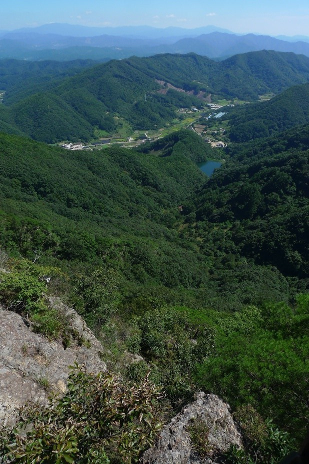

World Global Eco Location
This mountain is a considered a World Global Eco location. The surrounding area has several deep valleys
tucked within a cloister of mountains, well worth the hour drive south from Daejeon that it takes to
arrive at the parking lot in front of the mountain. It is a popular weekend hiking spot, locally renown
among Korean hiking clubs, many of whom travel here as groups by bus. Maybe this is because of this
mountain area’s status as an ecological park, a view of a series of nearby mountains on a clear day and
the famous suspension bridge, a technical marvel in the wild built in 2015 which I will explain about in
more detail later, high up on the mountain between two peaks. This GuBongSan (구봉산) should not be confused with a smaller hill of the same name located close to West Daejeon (서대전 IC).
Series of peaks
The trail begins to the rear of the large parking lot. There are signs that provide visitors with easy
to understand layout of the hiking trail, additionally as you proceed you will find the trail is well
marked. The trail starts on a road that leads up beside a reservoir. Soon the road is left behind and
the trail becomes steeper up through the woods. As one approaches the area where the peaks are located,
there are a set of stairs that lead up to the first of the two summits. These stairs which are shown in
the pictures cling to the steep mountain face. At the top of the stairs there is a flat area that leads
to the first of the gazebos which provide excellent views of the surrounding valleys from this location.
Up and down

Our destination was 구봉산 GuBongSan which is actually peak number 9 in a series of peaks. Before you can
reach this peak of 1002 meters you need to pass over 8 smaller consecutive peaks which are marked on the
map as 1봉 to 8 봉 with 봉 meaning peak, 산 meaning mountain and 구 pronounced “gu” means 9 therefore 구봉산
means 9 mountains peaks. As you reach each separate peak you will find stone marker with the peak number
and elevation. Therefore this hike consists of a series of several ups and downs as opposed to the usual
straight up and directly back down.
Extraordinary suspension bridge
I cannot imagine how difficult it must have been to build this extraordinary suspension bridge. When on
the bridge look down (unless you have a fear of heights) and you will realize why it was built. There is
a very deep valley between the two peaks! Also the views from here are excellent as you can well imagine
but be careful not to drop your camera as it would be irretrievable. Walk across this 100 meter long
bridge, which actually connects 4 봉 and 5 봉 and on the other side you will discover fine places where
comfortable picnic spots await your arrival. The bridge is called 구름다리 which translates to “cloud
bridge”. Next to the bridge is a sign giving some interesting and useful information about the bridge
although it is in Korean only. Most of the foreigners you will come across hiking in Korea generally
tend to be living in Korea and not visitors. But most of the sign just is common sense tips such as no
running or mischievous behavior, take care of children and seniors, no throwing litter over the bridge
and a max. load of 150 people at a time. It is a quite sturdy bridge with a 지상고 (which translates to
ground clearance) of 47 meters and 해발고 (which translates to elevation) of 740 meters.
Back to the parking lot
After you have reached the 9th peak of GuBongSan (구봉산), to return to the parking lot just retrace the hiking trail taken on the way up so you can experience the same magnificent views all over again. This is an interesting mountain to hike both because of the exceptional views and
the suspension bridge which is the most impressive one in Korea, even more so than the one at DaeDunSan
(대둔산) in my opinion. The only negatives on this hike are its distance from Daejeon, the closest major
city being JeonJu (전주) and as well on the weekends it can become very crowded. At the same time, there
is ample parking due to its popularity which is a problem at some of the other hiking areas. It is a
difficult location to get to without a car due to its distance from any major center.
Lost keys!
As an aside, I lost the keys to my car on this hike. On the way down I slipped and ripped my pocket.
Unfortunately the keys to my car were in that pocket and they must have fallen out. When we arrived at
the car I realized this. It was fortunate that ten years before I had placed a spare key under the car,
just in case the key became lost. I slid under the car and finally after looking for a while, I found it
slid up between the muffler heat shield and the car. It was good that I had done this as otherwise we
would have been really stuck. I went back the following Thursday and looked for the keys on the trail
but never found them. I still wonder where they ended up.